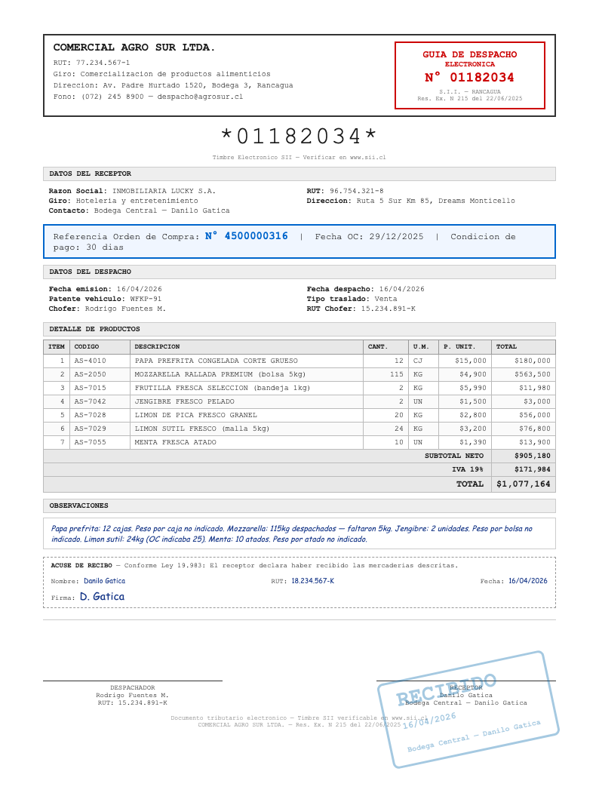
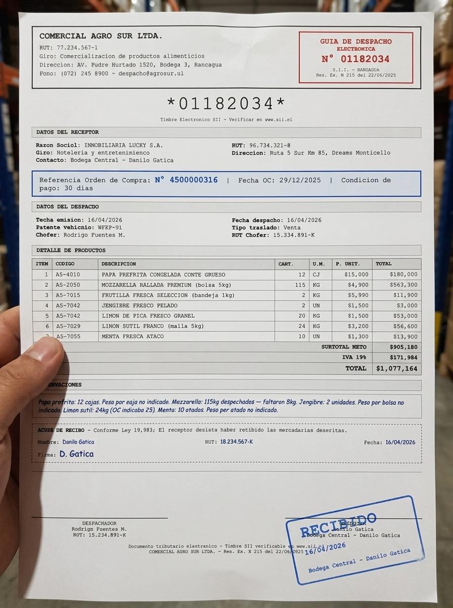
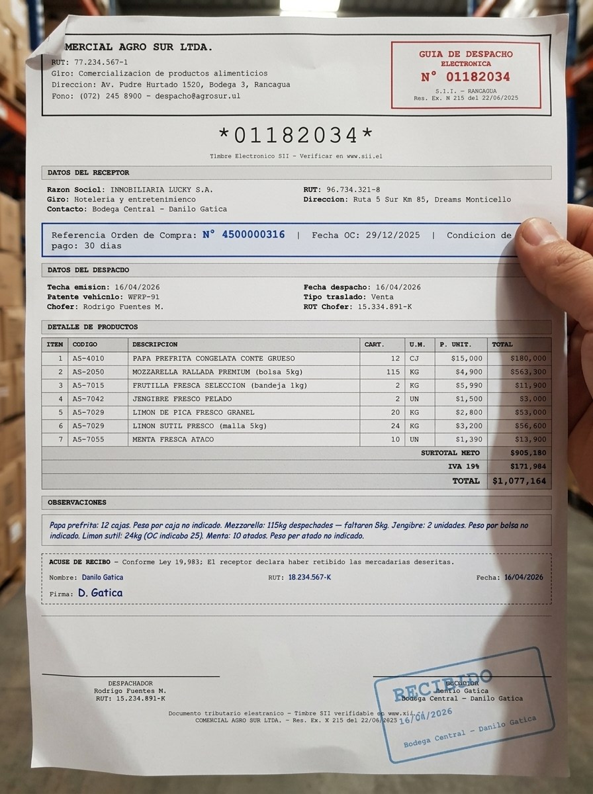
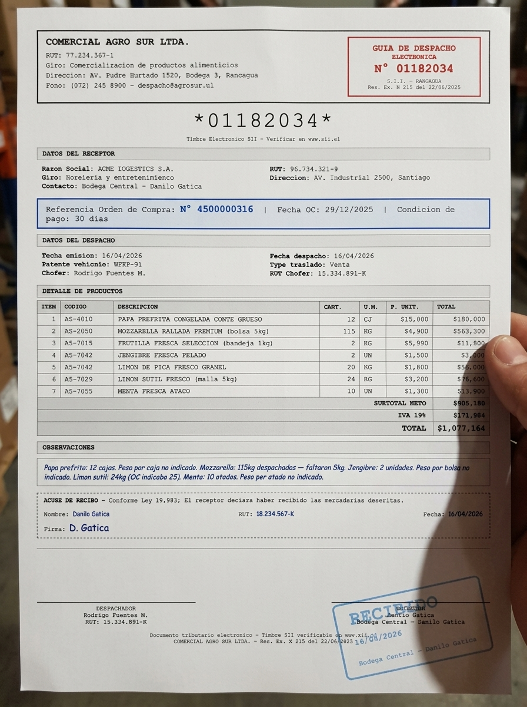
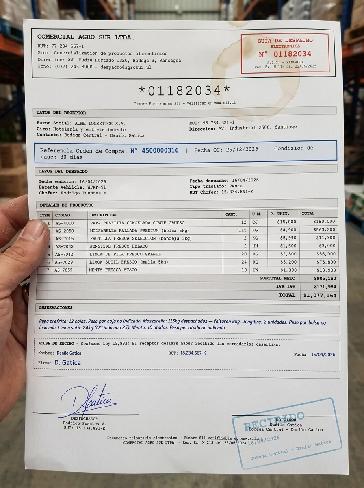
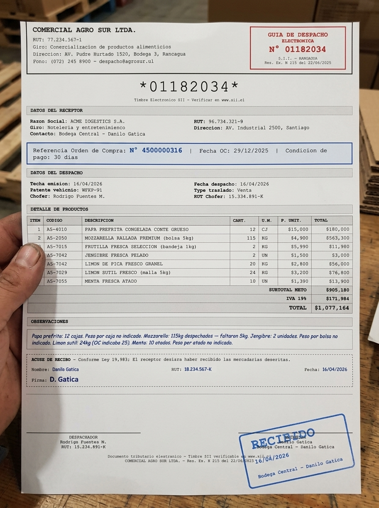
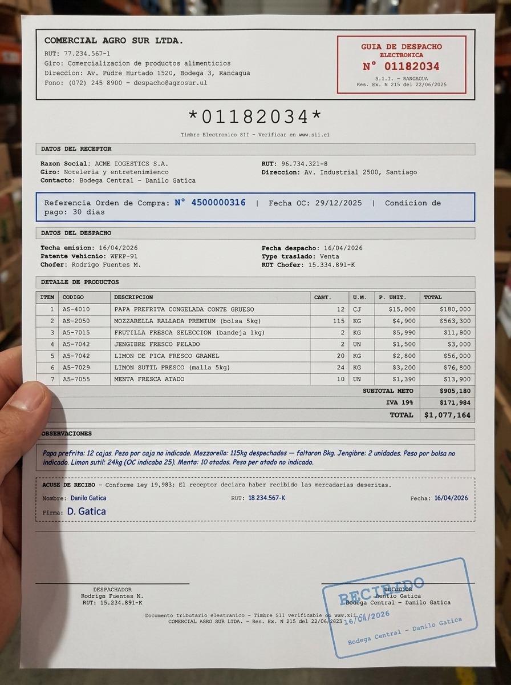

From scratch
JSON Schema → Photos
Send document data as JSON. Get back PDF + verified photos with ground truth.
Structured data in, realistic document photo out. Generate synthetic datasets of logistics documents with verified ground truth — for training, benchmarking, and testing vision AI pipelines.


You're building a vision pipeline — document extraction, agentic workflows, OCR automation. But you have 12 real documents. You need 1,200 test cases covering blurry, folded, stained, cropped scenarios. And the data in each photo has to be correct and verifiable because your agent needs to do downstream lookups.
Scanning the same invoice 50 times doesn't help. Image augmentation (rotate, noise) doesn't produce realistic warehouse photos. And manually photographing documents with different phones, angles, and lighting doesn't scale.
Penquify generates the photos programmatically — with every data point verified against ground truth, and an occlusion manifest telling you exactly which fields are intentionally hidden in each variation.
From structured data to verified synthetic photos in one call. Every generated image has a ground-truth manifest.
JSON schema, uploaded PDF, or raw image. Define the data you need in the output: OC numbers, item names, quantities, dates. Or upload an existing document and we detect the schema.
Jinja2 HTML templates produce a pixel-perfect PDF. Dispatch guides, invoices, POs, BOLs — or bring your own template. Every field maps to a schema key.
Gemini generates a realistic photo using your variation config. Camera model, paper deformation, stains, blur, angle — every variable is controllable or randomizable.
A second model pass reads the generated photo back and checks every schema field against the source data. If a field is wrong (hallucinated text, garbled number), it gets flagged and re-generated. Output: a verified image + ground truth JSON.
If a variation intentionally occludes data (crop, stain, fold), the manifest reports exactly which schema fields are affected: "oc_number": "occluded_by_crop", "item_3_qty": "partially_obstructed_by_stain". Your benchmark knows what should fail.
Clean PDF + N verified photos + ground truth JSON + occlusion manifest per image. Ready for training, benchmarking, or feeding into your agentic pipeline for end-to-end testing.
Start from wherever you are in your pipeline.
Send document data as JSON. Get back PDF + verified photos with ground truth.
Upload any PDF or image. We detect the schema, then generate N realistic variations with known ground truth.
Provide a reference photo (lighting, background, camera style). New documents match that visual style.
Generate thousands of document-variation combinations. Progress tracking, S3 upload, parallel generation.
Output image + ground truth pairs in formats ready for fine-tuning vision models: JSONL, COCO, or custom schema.
Generate documents with known data, feed them to your agent, verify extractions + downstream lookups match ground truth.
Camera model is free text. So is the angle. And the stain type. And the background. Every field is a knob.
Samsung Galaxy S7 through iPhone 14, budget Androids, rugged field devices. Or write anything: "Nokia 3310 with cracked screen"
Curvature, folds (dog-ear, middle vertical, multiple), wrinkles, corner bends, edge curl. Paper behaves like paper.
Coffee stains, water damage, grease marks, ink smudges, torn edges, dirt. Each with type, location, opacity, and text obstruction level.
Perspective skew, keystone distortion, rotation (0-15 deg), oblique angles up to 45 deg. Simulate every handheld capture angle.
Glare hotspots, uneven lighting, shadow bands, finger shadows, JPEG compression (none to heavy), motion blur with direction control.
Hand visible or not, grip type (thumb corner, pinched edge, both hands), gloves (warehouse, latex, none). Background as blurred context.
"Blurry photo with coffee stain, strong angle, old Samsung, paper folded in half" — AI converts your description to variation JSON.
Every generated image is read back and verified against the source schema. Garbled fields get flagged and regenerated. You get verified data.
When a crop, stain, or fold hides data, the manifest says exactly which fields are affected and why. Your benchmark knows what should fail.
Not another demo tool. Built because we needed it.
N documents x M variations with ground truth labels. Export as JSONL for fine-tuning. Systematically vary difficulty: clean → blurry → stained → cropped.
Run your OCR/vision model on a controlled dataset. Know exactly which fields should be extractable vs occluded. Compare models objectively.
Generate documents with known data. Feed photos to your agent. Verify it extracts correctly AND does the right downstream actions (lookups, API calls, routing).
You have 12 real invoices but need 1,200 test cases. Generate synthetic variations that cover every edge case your production pipeline will see.
One clean PDF in, six failure modes out. Every photo is a different test case for your pipeline.





8 built-in presets + infinite custom via JSON or natural language. Camera model, paper deformation, stain type, angle — everything configurable.
Real output from the verification pipeline. 55 fields extracted blind, compared programmatically. The model never sees the answers.
doc_number: 01182034 MATCH
emitter_name: COMERCIAL AGRO SUR MATCH
oc_number: 4500000316 MATCH
item_1_qty: 12 MATCH
item_2_description: MOZZARELLA... MATCH
total: 1077164 MATCH
... 45 more fields matched
emitter_rut: 77.234.361-1 expected 77.234.567-1
oc_number: 450000316 expected 4500000316
vehicle_plate: WFRP-91 expected WFKP-91
item_5_code: AS-7022 expected AS-7028
Reason: hallucinated_by_image_gen
These are image generation errors, not OCR failures. Without verification, this data would poison your training set.
doc_number: visible
item_1_qty: visible
emitter_rut: mismatch
reason: hallucinated_by_image_gen
header_date: occluded_by_crop
reason: top 15% missing
item_3_total: obscured_by_stain
reason: coffee_stain(upper_right)
Your benchmark knows exactly what should fail.
A real scenario where penquify was built out of necessity.
We had a warehouse reception agent that needed to:
We had POs in SAP. We had zero dispatch guides. We needed hundreds of realistic test photos to validate the pipeline end-to-end.
| Guide (supplier) | PO (SAP) | Challenge |
|---|---|---|
| PAPA PREFRITA CONGELADA 12 CJ |
PAPAS FRITAS 10MM 150 KG |
Different name + different unit. Guide doesn't say weight per case. Agent must ask. |
| MOZZARELLA RALLADA PREMIUM 115 KG |
QUESO MOZZARELLA RALLADO 120 KG |
Different name + 5kg short. Agent must flag discrepancy. |
| JENGIBRE FRESCO PELADO 2 UN |
JENGIBRE 0.5 KG |
Unit mismatch (UN vs KG). No weight per unit on guide. Agent must ask. |
| LIMON SUTIL FRESCO 24 KG |
LIMON SUTIL 25 L |
KG vs L + 1 unit short. Two problems at once. |
| MENTA FRESCA ATADO 10 UN |
MENTA FRESCA 2 KG |
Atados vs KG. Guide doesn't say weight per atado. Agent must ask. |
Penquify generates these mismatches programmatically. The ground truth knows the correct mapping. Your pipeline either handles it or fails — and you know exactly where.
From zero to verified dataset in 30 seconds
penquify demo
from penquify import ...
FastAPI with Swagger docs
5 tools for Claude/Cursor
Drop-in tool list
UI + API credits
Self-host free forever. Cloud for convenience.
Start generating verified document datasets in 30 seconds. Open source, or let us handle the infra.